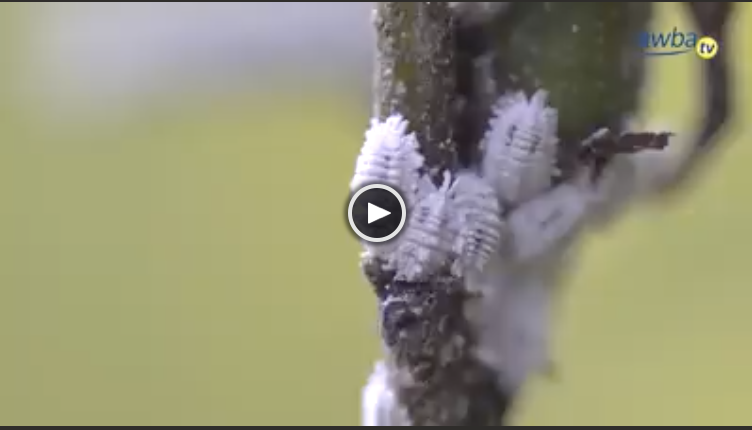

ရွှေခရု [Pomacea canaliculata Lamarck] သည် စပါး ထုတ်လုပ်ရေးတွင် အရေးကြီး သော ဖျက်ပိုးဖြစ်သည်။
၁၉၈၉ ခုနှစ်တွင် ဖိလစ်ပိုင်နိုင်ငံတွင် စပါးစိုက်ဧရိယာတွင် စပါးအထွက် ၁% မှ ၄၀% ထိ အထွက်ဆုံးရှုံးခဲ့ကြောင်း ကမ္ဘာ့စားနပ်ရိက္ခာအဖွဲ့အစည်းက ခန့်မှန်းခဲ့ပါသည်။
Clear